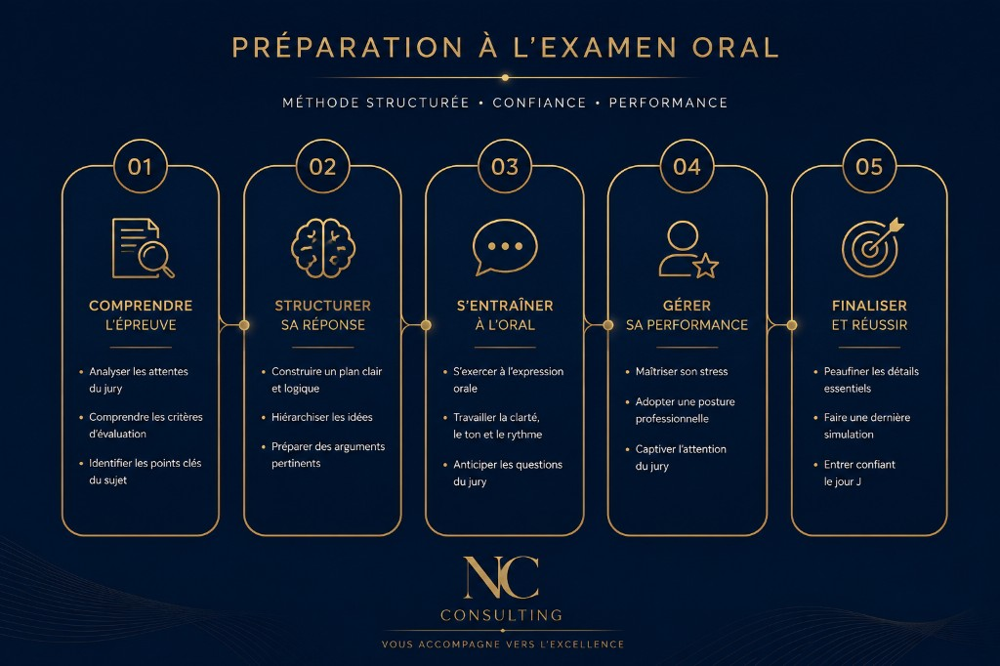
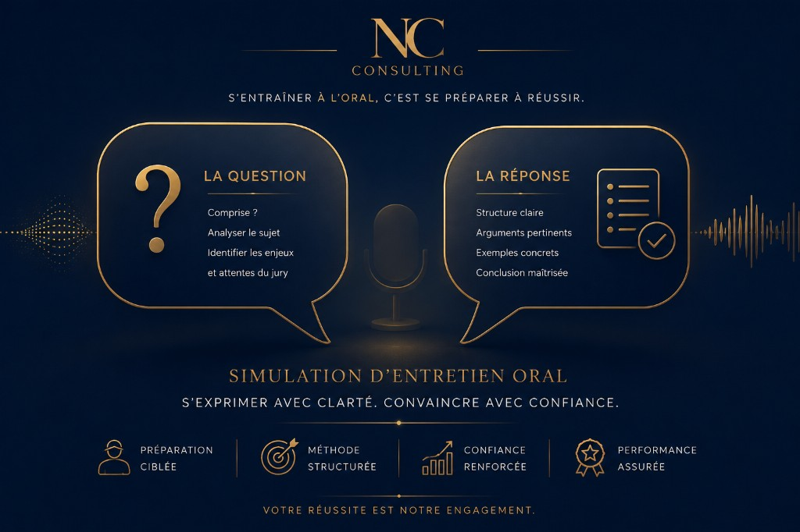
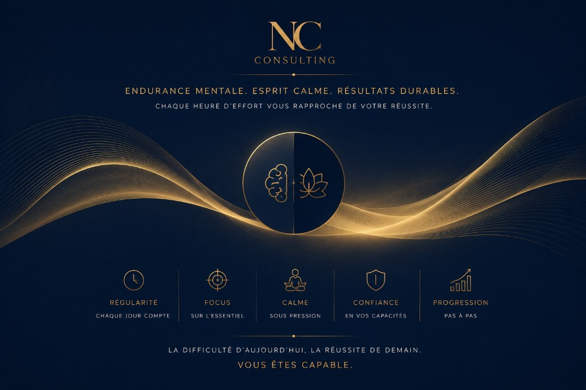

À la une · Concours
Réussir l'oral : la méthode en 5 étapes
Le fil rouge de présentation, les oraux blancs, la veille du jour J — le pilier du blog concours.
Concours d'excellence, reprise d'études à temps aménagé, coaching. Filtrez, lisez, passez à l'action.

Le fil rouge de présentation, les oraux blancs, la veille du jour J — le pilier du blog concours.


Début des cours : jeudi 23 juillet 2026 · À distance · Places limitées
Je m'inscris →